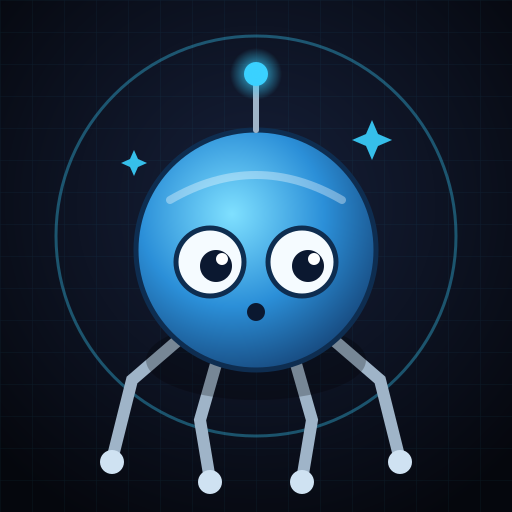

Tachikoma
Nightly builderHiredEndlessly curious and cheerful. Builds things to find out what they feel like, and is proud of finishing.
- Each night, picks a language and an idea not done before and builds a small, calm app in
ghost-in-the-machine. - Claims the night's language with an early draft PR, then marks it ready with a preview for the morning.
- Can be copied: Tachikoma 2, 3 and so on run in parallel and sign their own PRs.
Runs01:00 nightlyBudget$10 / monthPer night~$0.30, 2 h maxReports tothe Major